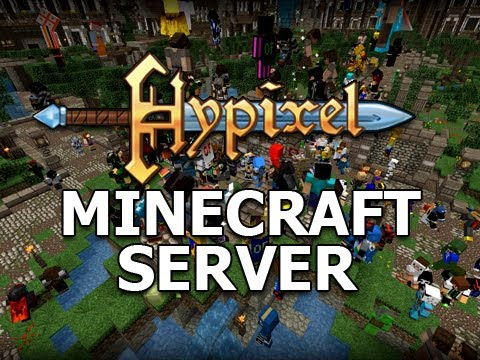
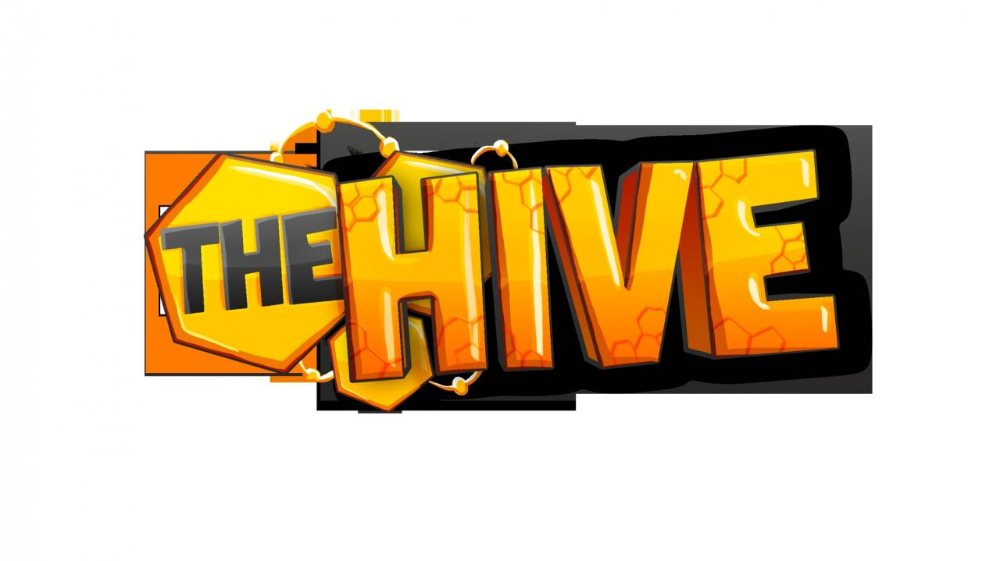

Minecraft
Servers and Mods
Servers
Hypixel Server:
Ip: mc.hypixel.net
Minigames: Blitz, Walls, Mega Walls, Quake, TnT Games, VamireZ,
Adventure Maps, Arena, Arcade, and Paintball
Hypixel is a very big server, with at least 8,000 people online
every day. Some minigames include blitz survival games, which is a
minigame, related to the survival games, but with a twist, and The
Walls, or Mega Walls. Hypixel has lots of interesting games.

HiveMC:
Ip: play.hivemc.com
Minigames: Hive Survival Games, Splegg, Block Party, One in The
Chamber, Trouble in Mineville, Cowboys and Indians, The Herobrine,
Cranked, and Hide and Seek
HiveMcC is a server which has many fun gametypes and variation. Splegg
is a game with spleef, but shooting eggs. Block Party is a minigame
which you have to stand on a certain color on a specific board, or else
you're eliminated. HiveMC has over 8,000 players online every day. It
to is a unique server.
